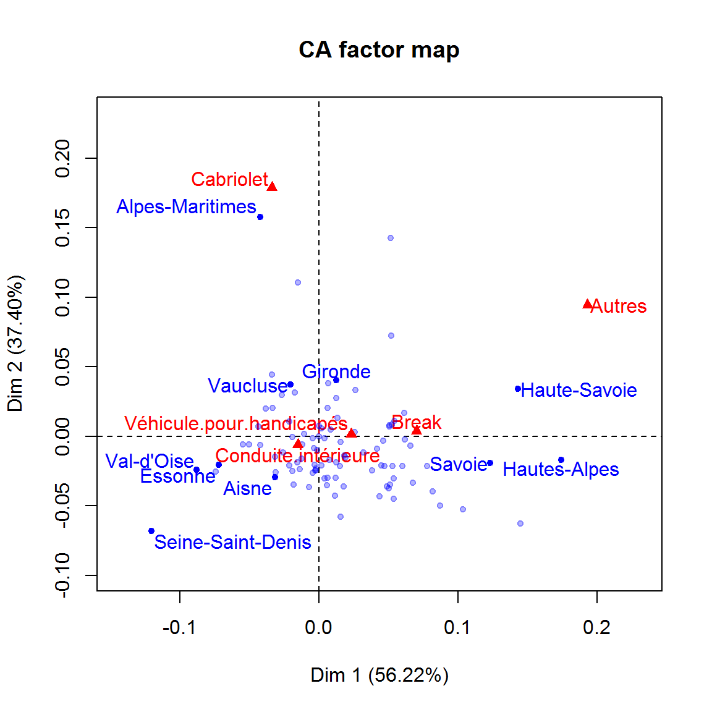

Chapitre 5 L’AFC
5.1 Principe de l’AFC
L’AFC sert à analyser le lien entre deux variables qualitatives. On l’utilise quand le nombre de modalités des variables est tel que la lecture du tableau de contingence (comptage des effectifs d’individus dans les cases du tableau croisé) devient complexe, voire impossible.
S’il y a indépendance etre les deux variables qualitatives, réaliser l’AFC n’a guère de sens \(\Rightarrow\) commencer par un test du \(\chi^2\).
On considère ici des variables qualitatives “pures” ou nominales. Si l’on utilise une variable ordinale (exemple : avec les modalités ‘petit’, ‘moyen’ et ‘grand’ codées 1, 2 et 3), l’ordre des modalités est perdu.
Lors de la construction du tableau de contingence, pour chacune des variables, les modalités sont exclusives : chacun des individus possède une modalité et une seule pour chacune des deux variables. Les modalités avec des effectifs nuls sont écartées.
Exemple d’une enquête réalisée au niveau national, dans laquelle on pose des questions avec quatre modalités possibles de réponses.

L’AFC permet simultanément de :
- Comparer les profils-lignes entre eux (les distributions de réponses entre les différentes régions).
- Comparer les profils-colonnes entre eux (les distributions de régions parmi les réponses).
- Repérer les cases du tableau de contingence où les effectifs observés \(n_{i,j}\) sont nettement différents des effectifs théoriques (effectifs sous l’hypothèse d’indépendance) pour mettre en évidence les modalités \(i\) de \(X\) et \(j\) de \(Y\) qui tendent à être présentes simultanément (\(f_{i,j} > p_{i,j}\)) et celles qui tendent à s’exclure mutuellement (\(f_{i,j} < p_{i,j}\)).
Remarque : statistique du \(\chi^2\) \(\Rightarrow\) module 3 “Statistiques descriptives”.
L’AFC consiste donc à synthétiser un tableau de contingence trop grand. Au plan mathématique, elle revient à faire une ACP du tableau de contingence avec la métrique du \(\chi^2\).
Dans le tableau de contingence, on continue à désigner les colonnes sous le nom de variables et les lignes sous le nom d’individus, afin de conserver un parallélisme dans les présentations de l’AFC et de l’ACP. Cependant, il faut garder en tête que les lignes, comme les colonnes, représentent les modalités des deux variables qui sont analysées, et qu’on désignera par la suite par caractères.
L’inertie totale du tableau de contingence vaut \(\frac{\chi^2}{n}\), et, contrairement au cas de l’ACP, on peut représenter les individus et les variables sur le même graphique car l’espace des individus et l’espace des variables sont les mêmes.
\(\Rightarrow\) En ACP, on cherche à conserver au mieux la variance de la population ; en AFC, l’écart à l’indépendance.
Pour que chacune des modalités des deux caractères soit correctement représentée dans l’analyse, il faut avoir des effectifs suffisants dans les cases du tableau de contingence. Cela peut signifier la nécessité d’exclure certaines modalités trop rares, ou de regrouper des modalités pour en augmenter les effectifs.
Pour une explication en vidéo par l’auteur du package FactoMiner, cliquer ici. Pour un cours en pdf, rendez-vous sur cette page.
5.2 L’AFC avec FactoMiner
Un exemple est donné, dans lequel on veut savoir s’il existe un lien entre les caractéristiques des voitures immatriculées et l’endroit où elles le sont (le département).
5.2.1 Données utilisées
Il s’agit des immatriculations des voitures particulières d’occasion par département, région et carrosserie.
Le fichier de départ a été converti au format .csv.
immat <- read.csv2 (file = 'data/AFC_immat.csv', dec=',',
header = T, encoding = "latin1") %>%
rename (dep = `Départements`) %>%
filter (dep != "Total") %>%
select (-1, -Total) %>%
mutate_if (is.numeric, funs (replace (., is.na(.), 0))) %>%
column_to_rownames (var = "dep")
head (immat)## Break Cabriolet Conduite.intérieure
## Bas-Rhin 19668 2184 74109
## Haut-Rhin 14937 1676 56014
## Dordogne 8171 944 33144
## Gironde 28384 4221 117207
## Landes 8762 878 32774
## Lot-et-Garonne 6185 761 27195
## Véhicule.pour.handicapés Autres
## Bas-Rhin 14 54
## Haut-Rhin 6 48
## Dordogne 8 42
## Gironde 22 142
## Landes 5 56
## Lot-et-Garonne 11 36Attention : notez que dans cet exemple, la base de données est déjà sous forme de tableau de contingence : les lignes correspondent aux modalités du caractère “département” et les colonnes aux modalités du caractère “type de voiture”.
Si l’on partait d’un classique tableau individus (en lignes) / variables (en colonnes), il faudra construire au préalable le tableau de contingence à l’aide de la fonction table (cf. module 2).
5.2.2 Réalisation de l’AFC
afc <- CA (immat, graph = FALSE)
names (afc)## [1] "eig" "call" "row" "col" "svd"summary (afc)##
## Call:
## CA(X = immat, graph = FALSE)
##
## The chi square of independence between the two variables is equal to 22332.55 (p-value = 0 ).
##
## Eigenvalues
## Dim.1 Dim.2 Dim.3 Dim.4
## Variance 0.001 0.001 0.000 0.000
## % of var. 56.219 37.398 5.549 0.834
## Cumulative % of var. 56.219 93.617 99.166 100.000
##
## Rows (the 10 first)
## Iner*1000 Dim.1 ctr cos2 Dim.2
## Bas-Rhin | 0.027 | 0.052 2.083 0.894 | 0.008
## Haut-Rhin | 0.022 | 0.054 1.708 0.897 | 0.011
## Dordogne | 0.003 | 0.026 0.221 0.947 | 0.003
## Gironde | 0.025 | 0.012 0.180 0.084 | 0.041
## Landes | 0.015 | 0.062 1.287 0.955 | -0.002
## Lot-et-Garonne | 0.001 | -0.005 0.006 0.072 | -0.002
## Pyrénées-Atlantiques | 0.025 | 0.066 2.141 0.984 | -0.007
## Allier | 0.002 | -0.004 0.005 0.024 | -0.027
## Cantal | 0.029 | 0.103 1.119 0.438 | -0.053
## Haute-Loire | 0.026 | 0.082 1.145 0.500 | -0.040
## ctr cos2 Dim.3 ctr cos2
## Bas-Rhin 0.082 0.023 | -0.015 1.772 0.075 |
## Haut-Rhin 0.109 0.038 | -0.011 0.768 0.040 |
## Dordogne 0.004 0.012 | 0.005 0.088 0.037 |
## Gironde 2.946 0.911 | 0.002 0.066 0.003 |
## Landes 0.002 0.001 | 0.013 0.557 0.041 |
## Lot-et-Garonne 0.001 0.008 | 0.011 0.343 0.399 |
## Pyrénées-Atlantiques 0.034 0.010 | 0.004 0.094 0.004 |
## Allier 0.261 0.873 | 0.001 0.003 0.001 |
## Cantal 0.434 0.113 | 0.105 11.599 0.448 |
## Haute-Loire 0.406 0.118 | 0.071 8.864 0.382 |
##
## Columns
## Iner*1000 Dim.1 ctr cos2 Dim.2
## Break | 0.903 | 0.070 78.767 0.994 | 0.004
## Cabriolet | 0.746 | -0.034 2.293 0.035 | 0.179
## Conduite.intérieure | 0.218 | -0.015 16.524 0.864 | -0.006
## Véhicule.pour.handicapés | 0.019 | 0.023 0.008 0.005 | 0.002
## Autres | 0.141 | 0.193 2.408 0.194 | 0.094
## ctr cos2 Dim.3 ctr cos2
## Break 0.362 0.003 | -0.004 2.386 0.003 |
## Cabriolet 94.927 0.964 | -0.005 0.515 0.001 |
## Conduite.intérieure 3.842 0.134 | 0.001 0.344 0.002 |
## Véhicule.pour.handicapés 0.000 0.000 | -0.106 1.732 0.105 |
## Autres 0.868 0.047 | 0.381 95.022 0.757 |La structure de l’objet est très comparable à l’objet ACP.
5.2.3 Nombre d’axes à retenir
Le choix du nombre d’axes se fait exactement comme pour l’ACP. Ici on en retiendrait… Combien ? (dur…)
eig <- as.data.frame (afc$eig)
mm <- mean (eig$`percentage of variance`)
ggplot (eig, aes (x = 1:nrow(eig), weight = `percentage of variance`)) +
geom_bar (fill = "lightblue") +
coord_flip () +
ggtitle ("Eboulis des valeurs propres") +
theme (axis.title = element_blank ())+
geom_hline (yintercept = mm)
5.2.4 Interprétation des axes
Pour l’interprétation des positions des individus et des variables (dans le même espace), on retiendra :
- les variables et individus interprétables sont ceux qui sont éloignés su centre du nuage de points.
- La proximité de deux modalités (bien projetées) d’une même variable indique que les individus (au sens du tableau de départ) qui prennent ces modalités ont des profils similaires sur le reste des autres variables.
- La proximité de deux modalités de variables différentes tend à indiquer que ce sont (à peu près) les mêmes individus qui prennent ces modalités, mais ce n’est pas toujours le cas.
Si une modalité soit graphiquement très éloignée des autres, c’est qu’elle possède dans le tableau de départ un profil tout à fait spécifique. Sa position dans le plan factoriel étant isolée, elle empêche une étude précise des positions des autres points qui se retrouvent « en paquet ». Il est recommandé dans ce cas de rendre cette modalité inactive (on la met en individu et variable supplémentaire), ce qui revient à réaliser l’AFC du tableau de départ en éliminant la ligne ou la colonne représentant cette modalité.
Remarque : La position moyenne des modalités de chacun des caractères est au centre du plan factoriel, quel que soit le couple d’axes représenté (ex : \(F_1, F_2\)).
On peut s’aider des graphiques avec sélections des profils lignes/colonne selon leur contribution et qualité de représentation.
plot.CA (afc, selectRow = "contrib 10") 
plot.CA (afc, selectRow = "cos2 10") 
Et approfondir avec dimdesc et le contenu des éléments de l’objet résultat :
a <- dimdesc (afc, axes = 1:2)
a$`Dim 1`$col## coord
## Cabriolet -0.03406597
## Conduite.intérieure -0.01541153
## Véhicule.pour.handicapés 0.02294535
## Break 0.06990982
## Autres 0.19286587a$`Dim 2`$col## coord
## Conduite.intérieure -0.006061409
## Véhicule.pour.handicapés 0.001527471
## Break 0.003865634
## Autres 0.094473008
## Cabriolet 0.178757047print (a)## $`Dim 1`
## $`Dim 1`$row
## coord
## Seine-Saint-Denis -1.205028e-01
## Val-d'Oise -8.791869e-02
## Val-de-Marne -7.432990e-02
## Essonne -7.226047e-02
## Seine-et-Marne -5.477814e-02
## Nord -5.037039e-02
## Seine-Maritime -4.377076e-02
## Alpes-Maritimes -4.250122e-02
## Pas-de-Calais -4.224495e-02
## Bouches-du-Rhône -3.837182e-02
## Pyrénées-Orientales -3.374121e-02
## Yvelines -3.344429e-02
## Aisne -3.149320e-02
## Aube -3.143509e-02
## Eure-et-Loir -3.128713e-02
## Eure -2.676634e-02
## Loiret -2.590359e-02
## Ardennes -2.143561e-02
## Gard -2.139036e-02
## Vaucluse -2.035721e-02
## Loire -1.913524e-02
## Meurthe-et-Moselle -1.910311e-02
## Orne -1.836443e-02
## Hérault -1.761927e-02
## Oise -1.571449e-02
## Var -1.529432e-02
## Sarthe -1.379318e-02
## Rhône -1.261760e-02
## Tarn-et-Garonne -1.201273e-02
## Indre-et-Loire -1.059448e-02
## Territoire de Belfort -7.278324e-03
## Lot-et-Garonne -4.724635e-03
## Allier -4.394207e-03
## Haute-Marne -3.502886e-03
## Loir-et-Cher -3.140012e-03
## Yonne -2.568009e-03
## Somme -2.507620e-03
## Cher -2.331563e-03
## Vienne -1.466094e-03
## Haute-Garonne -5.090963e-05
## -3.012981e-31
## Puy-de-Dôme 1.540346e-03
## Drôme 1.877008e-03
## Haute-Vienne 3.743229e-03
## Marne 3.815582e-03
## Nièvre 5.565141e-03
## Isère 6.018624e-03
## Moselle 6.172150e-03
## Hauts-de-Seine 6.554576e-03
## Meuse 7.385971e-03
## Calvados 8.469428e-03
## Maine-et-Loire 1.144199e-02
## Vosges 1.197765e-02
## Gironde 1.226144e-02
## Indre 1.231941e-02
## Charente 1.256245e-02
## Aude 1.339194e-02
## Saône-et-Loire 1.489107e-02
## Mayenne 1.558344e-02
## Ardèche 1.559999e-02
## Haute-Saône 1.777123e-02
## Loire-Atlantique 1.805983e-02
## Tarn 1.922924e-02
## Dordogne 2.559593e-02
## Charente-Maritime 2.593709e-02
## Corrèze 3.210698e-02
## Côte-d'Or 3.809917e-02
## Gers 4.148141e-02
## Creuse 4.343192e-02
## Deux-Sèvres 4.501198e-02
## Ain 4.622389e-02
## Ille-et-Vilaine 4.712467e-02
## Hautes-Pyrénées 4.859568e-02
## Ariège 4.994071e-02
## Lot 5.043305e-02
## Alpes-de-Haute-Provence 5.053949e-02
## Doubs 5.105133e-02
## Paris 5.137144e-02
## Corse-du-Sud 5.192945e-02
## Bas-Rhin 5.218902e-02
## Vendée 5.295559e-02
## Aveyron 5.356964e-02
## Côtes-d'Armor 5.390284e-02
## Haut-Rhin 5.432006e-02
## Manche 5.969410e-02
## Haute-Corse 6.131374e-02
## Landes 6.168946e-02
## Pyrénées-Atlantiques 6.557587e-02
## Jura 6.747017e-02
## Morbihan 7.773702e-02
## Haute-Loire 8.176348e-02
## Finistère 8.693922e-02
## Cantal 1.034789e-01
## Savoie 1.231039e-01
## Haute-Savoie 1.430532e-01
## Lozère 1.445917e-01
## Hautes-Alpes 1.740661e-01
##
## $`Dim 1`$col
## coord
## Cabriolet -0.03406597
## Conduite.intérieure -0.01541153
## Véhicule.pour.handicapés 0.02294535
## Break 0.06990982
## Autres 0.19286587
##
##
## $`Dim 2`
## $`Dim 2`$row
## coord
## Seine-Saint-Denis -6.804845e-02
## Lozère -6.282311e-02
## Mayenne -5.786252e-02
## Cantal -5.258330e-02
## Finistère -4.971712e-02
## Côtes-d'Armor -4.484982e-02
## Creuse -4.314707e-02
## Maine-et-Loire -4.273399e-02
## Haute-Loire -3.968751e-02
## Ariège -3.734793e-02
## Territoire de Belfort -3.666758e-02
## Haute-Saône -3.610000e-02
## Hautes-Pyrénées -3.605016e-02
## Nièvre -3.527796e-02
## Orne -3.492388e-02
## Doubs -3.457935e-02
## Jura -3.357340e-02
## Haute-Vienne -3.048780e-02
## Aveyron -3.037677e-02
## Vosges -2.983557e-02
## Isère -2.972866e-02
## Aisne -2.949380e-02
## Allier -2.653724e-02
## Eure-et-Loir -2.574538e-02
## Val-de-Marne -2.534338e-02
## Loire -2.504104e-02
## Yonne -2.473389e-02
## Somme -2.456922e-02
## Côte-d'Or -2.454563e-02
## Val-d'Oise -2.391910e-02
## Sarthe -2.357502e-02
## Cher -2.332247e-02
## Manche -2.164958e-02
## Ille-et-Vilaine -2.161899e-02
## Vendée -2.137873e-02
## Saône-et-Loire -2.135809e-02
## Morbihan -2.133030e-02
## Ardennes -2.105406e-02
## Deux-Sèvres -2.101219e-02
## Puy-de-Dôme -2.096500e-02
## Loir-et-Cher -2.074057e-02
## Essonne -2.066025e-02
## Savoie -1.928556e-02
## Indre -1.891997e-02
## Oise -1.882057e-02
## Meuse -1.701860e-02
## Hautes-Alpes -1.698177e-02
## Rhône -1.587399e-02
## Tarn -1.528299e-02
## Aube -1.471184e-02
## Loire-Atlantique -1.400754e-02
## Corrèze -1.174709e-02
## Loiret -1.165232e-02
## Vienne -1.004011e-02
## Gers -9.023304e-03
## Haute-Marne -8.455006e-03
## Pyrénées-Atlantiques -6.728537e-03
## Pas-de-Calais -6.445579e-03
## Tarn-et-Garonne -6.081220e-03
## Seine-et-Marne -5.903842e-03
## Nord -5.865414e-03
## Ardèche -3.944466e-03
## Ain -3.083734e-03
## Landes -2.171074e-03
## Marne -1.585396e-03
## Lot-et-Garonne -1.571293e-03
## Meurthe-et-Moselle -4.923831e-04
## 2.826051e-30
## Indre-et-Loire 1.866924e-03
## Dordogne 2.930141e-03
## Calvados 4.672278e-03
## Drôme 5.589878e-03
## Seine-Maritime 6.868601e-03
## Alpes-de-Haute-Provence 6.926638e-03
## Haute-Garonne 7.267337e-03
## Lot 7.784406e-03
## Bas-Rhin 8.453751e-03
## Gard 1.060292e-02
## Haut-Rhin 1.117205e-02
## Aude 1.327454e-02
## Haute-Corse 1.699308e-02
## Bouches-du-Rhône 2.001680e-02
## Yvelines 2.046225e-02
## Moselle 2.055545e-02
## Charente 2.726250e-02
## Eure 2.982343e-02
## Hérault 3.131496e-02
## Charente-Maritime 3.324311e-02
## Haute-Savoie 3.426670e-02
## Vaucluse 3.743514e-02
## Hauts-de-Seine 3.804606e-02
## Gironde 4.050476e-02
## Pyrénées-Orientales 4.436732e-02
## Corse-du-Sud 7.222577e-02
## Var 1.105449e-01
## Paris 1.424313e-01
## Alpes-Maritimes 1.577608e-01
##
## $`Dim 2`$col
## coord
## Conduite.intérieure -0.006061409
## Véhicule.pour.handicapés 0.001527471
## Break 0.003865634
## Autres 0.094473008
## Cabriolet 0.178757047Interprétation de l’exemple :
- Les modalités fortement contributives à la formation des deux premiers axes ont presque toutes une bonne qualité de représentation (ce n’est pas toujours le cas).
- Concernant les modalités du “type de voiture”, on remarque une distinction nette entre les cabriolets d’un côté, et les “autres” d’un… autre côté.
- Concernant les modalités “département”, on remarque une opposition entre les départements du nord et de l’Île de France (quart sud-ouest), les Alpes Maritimes et le Var (quart nord ouest), mais également la Savoie et la Haute-Savoie (Est).
- Concernant le croisement des deux modalités, il apparaît immédiatement une proximité entre le type cabriolet et les départements du pourtour méditerranéen, les “autres” (sans doute type SUV ou 4x4) avec les départements de montagne. Paris est également très atypique, le département le plus éloignés des types “standard”. On peut également dire que les départements du nord parisien ont une sur-repréentation marquée des conduites intérieures (ce qui revient à dire qu’ils comptent peu des autres types).
- Les types conduite intérieure, break et véhicules pour handicapés sont proches du barycentre du nuage, ce qui en fait un type “standard”, sans appartenance géographique particulière.
5.3 Exercice
Refaire pas à pas cet exercice